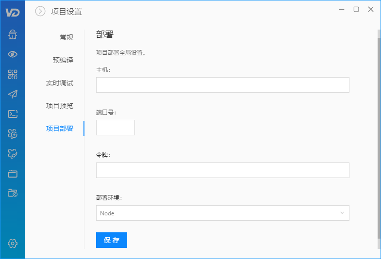

项目部署
为了后续更方便的进行项目代码部署（一键部署），项目部署前需要在 服务器端 和 客户端进行一些设置。
首先，服务器端需要全局安装 web-deploy 依赖（服务器上需要有 Node 环境支持）：
npm install web-deploy -g
然后，在服务器端项目根目录执行命令（该命令在部署过程中需一直开启）：
deploy-server
会生成两个文件：.deploy 和 public.pem。将其拷贝到客户端项目根目录。
然后，将 .deploy 文件内的信息填入 VD 的 项目设置 > 项目部署输入框内：
{
"delpoyPath": "app",
"token": "6dqccVgZj5eGAjkylkQKJKkoWRcNdK0N", // 令牌
"url": "http://115.29.168.166", // 主机
"port": 9000 // 端口号
}

部署环境，根据服务器端 Web 服务器环境选择。
最后，一键部署：